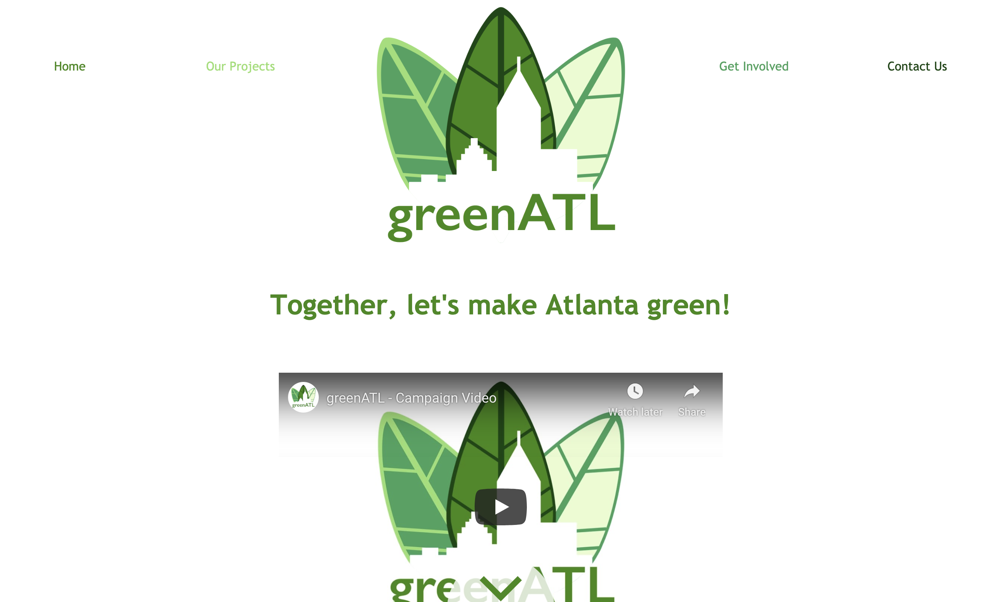

Design
greenATL
james-weichert.github.io/greenATL/
greenATL is an online advocacy campaign for Atlanta, GA green space and greenification spanning multiple online media platforms including Twitter, Instagram, and Snapchat. The campaign features a custom website and video combined through a cohesive brand identity. greenATL was created as the capstone project for a 10th grade design class.
